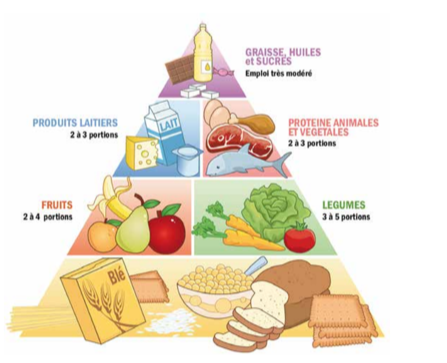

<div class="container">
  <div id="page1">
    <div  >
      <h1>Des repas équilibrés pour une aventure au top!</h1>

      <h2> Pour bien commencer : </h2>
      <p>
        Voici la pyramide des aliments ainsi que le nombre de portions quotidiennes de chaque catégories conseillé.</br>
      </p>
      <br />
      <p>
        Mais pourquoi doit-on suivre ces conseils? A quoi ça sert?<br />
        Les chercheurs et les médecins se sont rendus compte qu’une alimentation équilibrée et variée permet de rester
        en bonne santé et limite les risques de maladies chroniques (diabète, cholestérol…).<br />
        C’est donc pour ça que c’est si important et qu’il faut aussi faire de l’exercice physique pour rester en
        forme.<br />
      </p>
      <p>
        A toi de construire des repas équilibrés pour un week-end d’équipage en autonomie.<br />
        Il faut donc prévoir le goûter du samedi, le repas du samedi soir, le petit déjeuner et le repas du midi du
        dimanche.<br />
        Quantité, variété, aides toi de la pyramide pour faire tes menus.<br /><br />
      </p>
      <h2> Déroulement : </h2>
      <p>
        Un menu est considéré comme équilibré lorsqu’il contient :<br />
        une viande (par jour, donc pas forcément à tous les repas), des légumes, un laitage, des fruits.<br />
        Alors à toi de jouer pour proposer des menues équilibrés pour ce week-end.<br />
      </p>
      <p>
        Pour finir :
      </p>
    </div>
  </div>